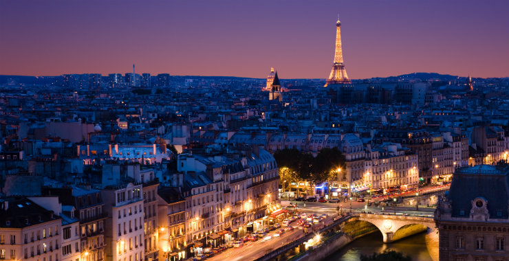

Paris, France
Paris is the capital of France and unbeknownst to many, most of france lives in the country. Its population is about twelve million which is roughly 18% of France's population. Paris is especially famous with couples as given by its wellknown nickname the "city of love" and "city of lights". It contains some of europes most famous works of art such as the Mona Lisa and the Eiffel Tower.
